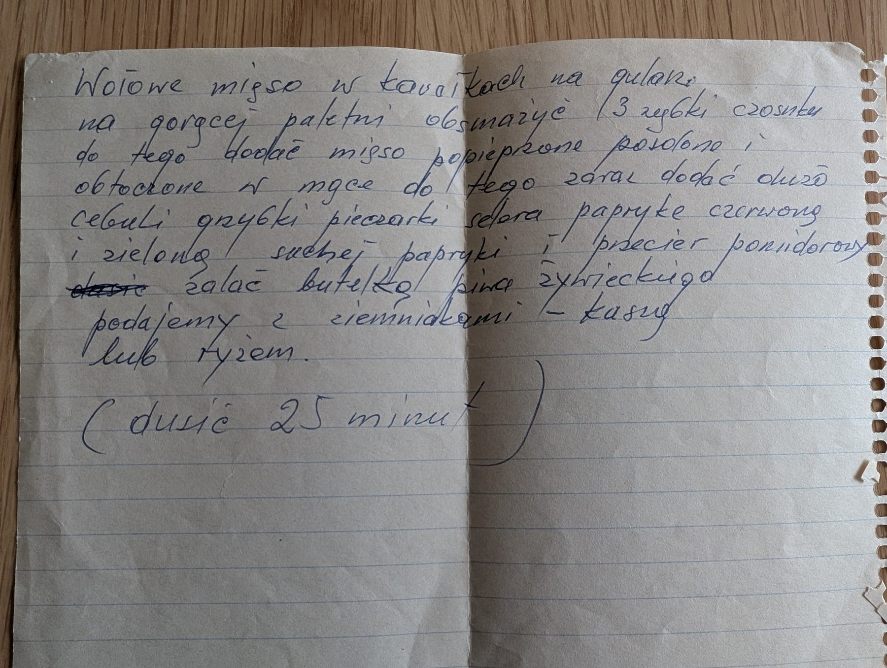

Gulasz wołowy

Składniki
- wołowina w kawałkach
- 3 ząbki czosnku
- sól, pieprz
- mąka
- dużo cebuli
- pieczarki
- seler
- papryka czerwona i zielona
- słodka papryka w proszku
- przecier pomidorowy
- butelka piwa Żywiec
Przygotowanie
- Na gorącej patelni obsmażyć 3 ząbki czosnku.
- Dodać mięso posolone, popieprzone i obtoczone w mące.
- Zaraz dodać dużo cebuli, pieczarki, seler, paprykę czerwoną i zieloną, suchą paprykę i przecier pomidorowy.
- Zalać butelką piwa i dusić 25 minut.
- Podawać z ziemniakami, kaszą lub ryżem.
Oryginalny zapis
Wołowe mięso w kawałkach na gulasz na gorącej patelni obsmażyć 3 ząbki czosnku do tego dodać mięso popieprzone posolone i obtoczone w mące do tego zaraz dodać dużo cebuli grzybki pieczarki selera paprykę czerwoną i zieloną suchej papryki i przecier pomidorowy [skreślone: dusić] zalać butelką piwa żywieckiego podajemy z ziemniakami – kaszą lub ryżem. (dusić 25 minut)